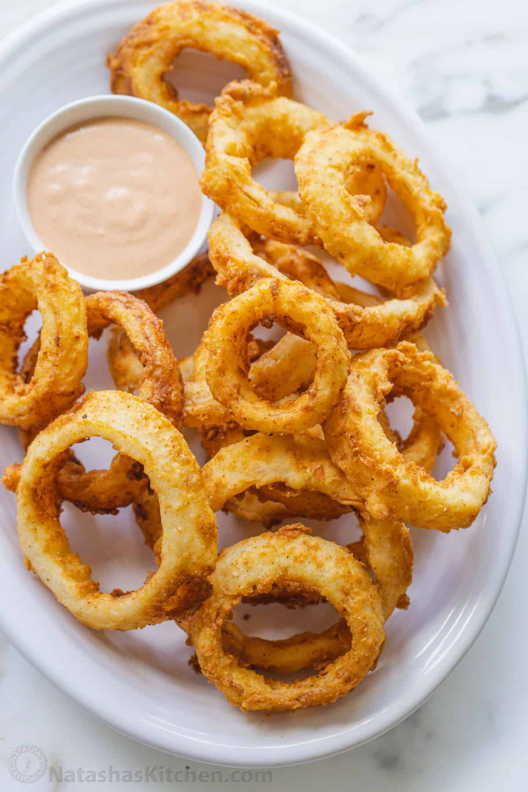

Scrumptious Onion Rings Recipe

Onion rings are the best! Here you'll learn how easy and satisfying they can be to make!
If you've ever had a bowl of onion rings in Hong Kong, you probably think they're the soggiest fried food ever. However, that need not be the case!
This onion ring recipe will cook up the crispest, most flavourful rings you've tasted!
What you'll need:
- 1 large onion
- 1 quart of oil for frying
- 1 ¼ cups of all-purpose flour
- 1 teaspoon of baking powder
- 1 teaspoon of salt
- 1 cup of milk
- 1 large egg
- ¾ cup dry bread crumbs
- ⅛ teaspooon seasoned salt
Steps:
- Slice the onion into ¼-inch-thick rings.
- Heat oil in a deep-fryer to 185°C. Place a wire rack over a sheet of aluminium foil.
- Prepare breading station by setting out 3 wide, shallow dishes. Whisk flour, baking powder, and salt together in the first dish. Whisk milk and egg together in the second dish. Place bread crumbs in the third dish.
- Dip each onion ring into the flour mixture, turning several times until fully coated with flour. Transfer to the egg mixture and use a fork to turn until coated. Lift onion with the fork and shake gently so excess liquid drips back into the dish. Place onion in the bread crumbs and turn several times to coat, scooping crumbs over the ring if necessary. Lift again with the fork, tap any excess bread crumbs back into the dish, and place on the wire rack while you prepare the remaining onion rings.
- Deep-fry 3 to 4 onion rings at a time in the preheated oil until golden brown, 2 to 3 minutes. Drain on paper towels while you deep-fry the remaining rings.
- Sprinkle with seasoning salt before serving.